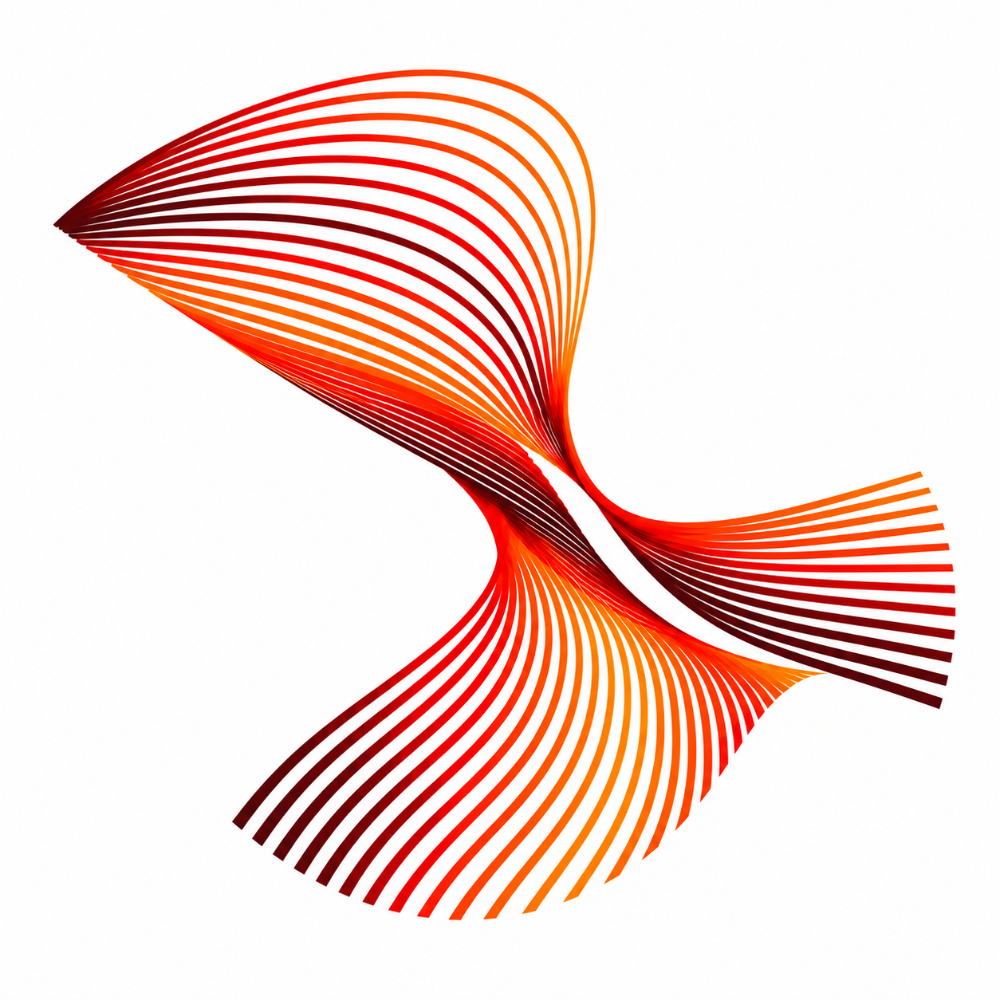

ARibbonfield
Flow
Fine filaments compress into a diagonal twist and spread back into open fans. The tension between narrow and wide sections creates the motion.
32 px
48 px
96 px
80 px
The most fluid direction. The small version needs fewer filaments and a cleaner crossing.
Open full sketch ↗